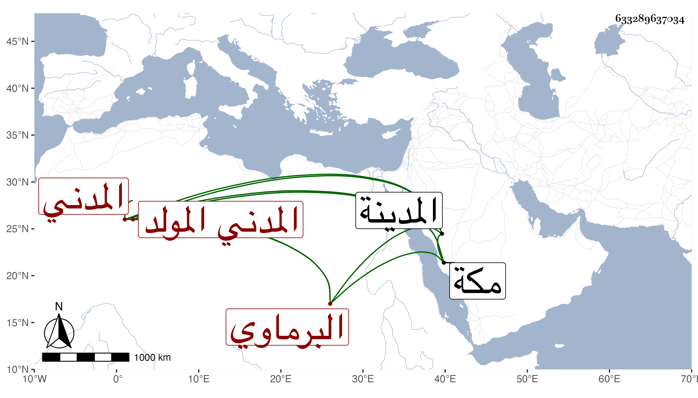

0902Sakhawi.DawLamic.ITO20230111-ara1.EIS1600.633289637034
Biography ID: 633289637034
422
محمد بن علي بن أيوب بن إبراهيم أبو الفتح البرماوي الأصل المدني المولد المكي الدار الماضي أبوه ويعرف كهو بابن الشيخة ويقال له المدني لكونه ولد بالمدينة ، ونشأ بمكة فحفظ القرآن وغيره وأسمعه أبوه على أبي الفتح المراغي والتقي بن فهد وغيرهما وأجاز له جماعة وتكرر قيامه بالقرآن في كل سنة بحاشية الطواف . وليس بالمرضي وأموره زائدة الوصف .
